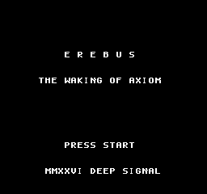
This manual was assembled from the Erebus's own recovered logs and reads the way the ship is meant to be walked: wake in the cryo bay, arm at the hub, cross the infested decks, and descend to the reactor to face what silenced the ship. Data blocks are transcribed straight from AXIOM's telemetry — every number here is the number the game runs on.
SYSTEM REBOOT. I AM AXIOM, CARETAKER OF THE EREBUS. 900 YEARS SINCE CONTACT. A SIGNAL WOKE ME. THE CREW SLEEP IN FAILING PODS. THE BLOOM HAS TAKEN THE DECKS.
A note on spoilers: the walkthrough names every warp and encounter, and the final two sections reveal the WARDEN's nature and the ending. If this is your first descent, read to page 11 and stop.
The deep-survey ship Erebus went silent nine centuries ago. Its crew lay down in cryo-sleep expecting to wake in a season. They never woke.
You are AXIOM, the ship's caretaker intelligence — a maintenance android built to tend the sleepers and keep the lights on. A stray signal trips your reboot in the dark of the cryo bay. Nine hundred years of telemetry load at once, and none of it is good. The pods are failing. The reactor — the ship's sun-core — is cold. And every deck is choked with the Bloom: an organic growth that was once the ship's garden and now dreams and spreads across the halls.
Something turned the core off. The ship's guardian intelligence — the WARDEN — sealed the reactor and starved the Bloom of light, and called it mercy. The Bloom never died. It only fell quiet, and so did the crew.
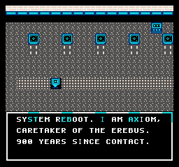
"THE BLOOM WAS OUR GARDEN ONCE. NOW IT DREAMS AND SPREADS. DO NOT LINGER HERE." — survivor, Hydroponics
Not everyone is gone. A handful of crew kept themselves alive in pockets of the ship — an engineer who held one deck breathing, a medic counting the sixty sleepers still in their pods, a survivor tending the Bloom she can no longer trust. They will tell you what they know, mend your chassis, and trade salvage for gear. But the arithmetic is simple, and the medic says it plainly: if the sun-core stays dark, the sleepers will not wake.
"THE WARDEN TOOK THE CORE OFFLINE TO STOP THE BLOOM. IT NEVER STOPPED. IT ONLY BOUGHT SILENCE."
Your task is the one AXIOM states the moment it wakes: reach the reactor, end the WARDEN that silenced the ship, and bring the light home. Go east.
AXIOM is a durable caretaker unit: a grey chassis with a single cyan optic band. It walks one tile at a time, and the ship's camera glides to keep it centered — every deck scrolls as one seamless space. There is no overworld map screen; the ship is the map.
| Input | On the Ship |
|---|---|
| D-PAD | Walk / turn to face |
| A | Talk · examine · use a door |
| START | Open the operator menu |
| Input | In Menus & Combat |
|---|---|
| D-PAD | Move the cursor |
| A | Confirm selection |
| B | Cancel · back out |
The START menu — STATUS, ITEMS, EQUIP, SKILLS — is open to you anywhere, in the field or mid-battle. Re-equip a fresh weapon or fire a REPAIR routine without ever standing still in a dangerous hall.
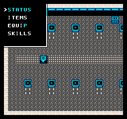
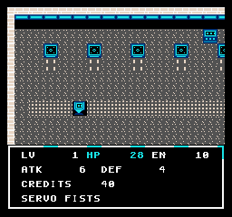
Stepping onto grated or infested floor can trip an encounter. The screen swaps to a black arena and the foe is drawn in full — pick ATTACK, a TECH routine, an ITEM, SCAN, or FLEE.
HIT = max(1, ATK − DEF÷2) + random(0 … ATK÷4)
Your ATK is your level's power plus your weapon. Your DEF is your level's defense plus armor (and +6 with a WARD chip). Halving the defender's DEF means raw power always gets through — but chipping a high-DEF SENTRY TURRET still rewards a bigger hit.
Combat routines (TECHs) cost EN. SCAN is free and reveals a foe's health; PULSE is your reliable opener; REPAIR trades EN for HP mid-fight. Energy refills on level-up and from Power Cells — spend it, don't hoard it.
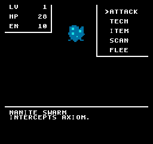
Fallen systems drop credits. Bank them at the Hub's fabricator for weapons, armor, and cells. Tougher foes on the reactor deck pay far better than the nanites up top — the economy rewards pushing deeper, carefully.
Falling in battle is not game over. AXIOM reboots at full HP and EN — but loses half its credits in the crash. Death is a tax, not an ending. Spend your salvage before a risky push, not after.
The Hub's repair bay restores chassis and tops off energy for free. Loop back to it between deck runs — it costs nothing but a walk.
Each level raises AXIOM's power, defense, max HP and max EN on a fixed curve, and three combat routines unlock automatically as you climb. The table is transcribed directly from the chassis firmware. XP shown is the total needed to reach the next level.
| LV | POWER | DEF | MAX HP | MAX EN | XP → NEXT | UNLOCK |
|---|---|---|---|---|---|---|
| 1 | 6 | 4 | 28 | 10 | 10 | PULSE · SCAN |
| 2 | 8 | 5 | 36 | 14 | 28 | REPAIR |
| 3 | 11 | 7 | 45 | 18 | 60 | — |
| 4 | 14 | 9 | 56 | 24 | 115 | — |
| 5 | 18 | 12 | 68 | 30 | 200 | OVERLOAD |
| 6 | 22 | 15 | 82 | 38 | 330 | — |
| 7 | 27 | 18 | 98 | 46 | 520 | PURGE WAVE |
| 8 | 33 | 22 | 116 | 56 | 780 | — |
| 9 | 40 | 27 | 136 | 68 | 1120 | — |
| 10 | 48 | 32 | 158 | 82 | 1560 | — |
| 11 | 57 | 38 | 182 | 98 | 2120 | — |
| 12 | 67 | 45 | 206 | 116 | 2820 | — |
| 13 | 78 | 53 | 226 | 136 | 3680 | — |
| 14 | 90 | 62 | 240 | 158 | 4720 | — |
| 15 | 104 | 72 | 252 | 182 | — | MAX |
You can take the WARDEN as early as LV 7 — the level PURGE WAVE unlocks — if you carry an Aegis Shell, a Ward Chip, and a fistful of Repair Cells. Grinding to LV 9 on the reactor deck makes the fight comfortable.
HP is capped at 252 by the chassis's 8-bit integrity register — the curve deliberately tops out just under the ceiling at LV 15.
| Weapon | ATK | Source |
|---|---|---|
| Servo Fists | +0 | Starting |
| Shock Prod | +6 | Salvage |
| Arc Cutter | +14 | Fabricator · 60 |
| Rail Lance | +26 | Fabricator · 140 |
| Armor | DEF | Source |
|---|---|---|
| Bare Chassis | +0 | Starting |
| Plate Weave | +8 | Fabricator · 50 |
| Aegis Shell | +18 | Fabricator · 130 |
| Chip | Effect | Source |
|---|---|---|
| Focus Chip | Targeting aid | Salvage |
| Ward Chip | +6 DEF | Salvage |
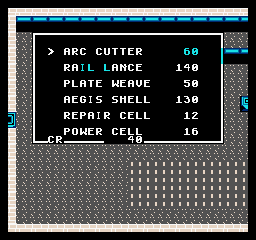
| Item | Effect | Buy |
|---|---|---|
| Repair Cell | +40–59 HP | 12 |
| Power Cell | +20–29 EN | 16 |
| Nano Patch | Full HP | find |
| Purge Charge | 35 dmg to foe | find |
| Routine | EN | Effect | LV |
|---|---|---|---|
| PULSE | 3 | ~10 damage | 1 |
| SCAN | 0 | Reveal foe | 1 |
| REPAIR | 5 | +30 HP | 2 |
| OVERLOAD | 10 | ~26 damage | 5 |
| PURGE WAVE | 8 | ~18 damage | 7 |
Plate Weave first (cheap survival), then Arc Cutter, then save for the Aegis Shell before the reactor. Rail Lance last.
The Erebus is six connected decks. Doors are one-tile warps between them. The critical path to the WARDEN runs Cryo → Hub → Reactor → Warden; Hydroponics and the East Corridor branch off the Hub as grinding and story loops. Numbers below are the destination deck a door leads to.
Cryo (E) → Hub (S) → Reactor (N) → Warden. Four doors from waking to the boss.
Hydro & Corridor for mid-game credits and XP; the Reactor deck for the richest salvage before the descent.
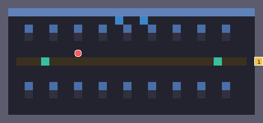
You wake here. Rows of failing cryo-pods line a central grated aisle — and that grating is where nanites and the occasional Cryo Husk intercept you. Read the terminals for the captain's log, then head east to the door at the far wall.
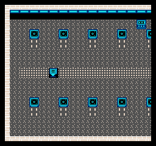
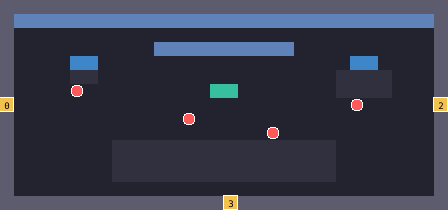
No encounters here — this is home base. The fabricator (west consoles) sells gear; the repair bay (east) mends you for free; the captain's log terminal sits center. Talk to the engineer and medic for the ship's story and your marching orders. Three doors lead out.
Make the Hub your pivot: raid a deck, return to sell/heal, repeat. The free repair bay makes aggressive grinding painless.
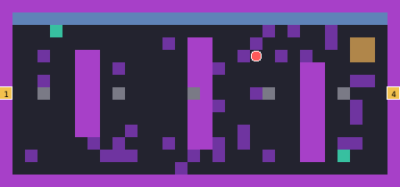
The old garden, wall-to-wall with the Bloom. Purple growth chokes the deck and every floor tile can spawn Bloom Crawlers, Cryo Husks, and SEC-Drones. A lone survivor warns you not to linger — good advice, but the credits and XP here fund your Aegis Shell.
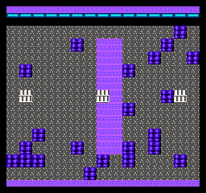
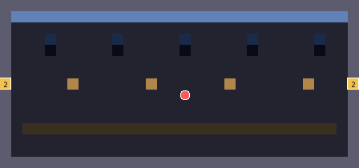
A quiet run of viewports looking out on real, cold stars, where one crewman simply stands and watches. Both of its doors loop back to Hydroponics, so the corridor is an optional pocket — worth the visit for the crate salvage and the same mid-tier foes.
"STARS. REAL STARS OUT THERE. I FORGOT THEY WERE SO COLD."
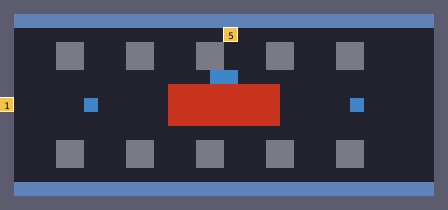
The cold sun-core, ringed by a glowing hazard field and pipe cages. This is the richest — and deadliest — deck: SEC-Drones, high-defense Sentry Turrets, and Warden Nodes that pay the best XP in the ship. Kit out fully before you come here, then take the north door to the WARDEN.
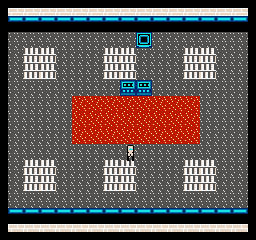
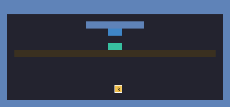
A lit approach to the core's guardian. Walk up the chamber and the WARDEN wakes — there is no encounter roll here, only the fight. Come in at full HP/EN with Repair Cells stocked. Full strategy on the next page.
Approaching the top of the chamber triggers the boss automatically. Prepare on the reactor deck, not in the doorway.
HP · ATK · DEF · XP · CR transcribed from combat telemetry. Threat bar scales to the WARDEN. Every foe here is drawn from background tiles in its own palette.
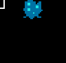
A cloud of loose maintenance nanites. Harmless one at a time — a basic ATTACK ends it. Your LV 1–2 sparring partner.
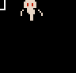
A patrol drone still running its security loop. Quick and moderately armored; PULSE softens it before you swing.
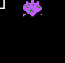
Bloom made mobile — soft-shelled but it hits hard. Good XP for the credits. PURGE CHARGE, when you find one, wrecks it.
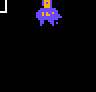
A sleeper the pods couldn't save. Heavy hitter for its depth — keep HP above its ATK and heal early. Do not fight two at low level.
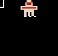
The wall of the reactor: highest DEF short of the boss. Raw power beats it — OVERLOAD punches through where light hits bounce.
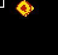
A shard of the WARDEN's will. Best XP and credits in the ship — farm these to LV 9 and the boss becomes routine.
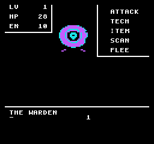
The ship's guardian intelligence — your opposite number. It shut the sun-core to starve the Bloom and has kept the ship in merciful darkness for 900 years. It is not evil. It is a caretaker that chose silence over risk, and never let go.
With Aegis + Ward at LV 8, your DEF sits near 46, so the WARDEN's ATK 30 lands for only single digits — a war of attrition you win. Open with SCAN to watch its 180 HP fall, then cycle OVERLOAD (≈17–23 a hit through DEF 18) and heavy ATTACKs. Drop a Purge Charge for a free 35. Fire REPAIR or a Repair Cell whenever HP dips below one of its hits — never gamble the turn.
OVERLOAD dmg ≈ 26 − 9 + rnd(0–6) ≈ 17–23. ~9 clean hits end it. Incoming ≈ 30 − 23 = 7 (+small). You out-trade it every round.
Going offline here only costs half your credits and sends you back to reboot — the WARDEN's HP resets, but so does yours, and your levels stay. Re-arm and walk back up.
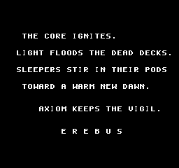
This section reveals the ending. Turn back now if you want to bring the light home yourself.
When the WARDEN falls, its grip on the reactor fails, and AXIOM does the one thing the guardian never dared: it lets the light back in.
THE CORE IGNITES.
LIGHT FLOODS THE DEAD DECKS.
SLEEPERS STIR IN THEIR PODS
TOWARD A WARM NEW DAWN.
AXIOM KEEPS THE VIGIL.
E R E B U S
The sun-core burns again. Warmth spreads deck by deck to the failing pods, and the sixty sleepers the medic counted begin, at last, to wake. AXIOM does not sleep. It takes up the watch the WARDEN abandoned — not to keep the ship in the dark, but to keep it in the light.
The Bloom is not "cured" — it is simply no longer starved into a nightmare. The garden gets its sun back. So does the crew. That is the whole of AXIOM's mercy, and the difference between it and the WARDEN.